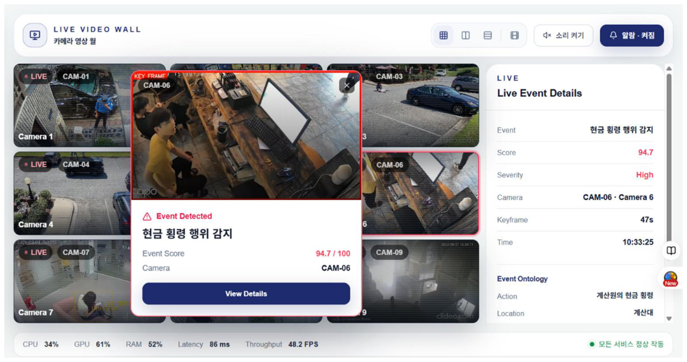

객체 탐지 모델만큼 빠르게,
생성형 VLM만큼 똑똑하게
대한민국 물리보안 1위 기업의 40년 현장 보안 노하우를 Event Ontology로 전환했습니다. STEC NAVI는 이 축적된 현장 지식을 AI 판단의 기준으로 활용합니다.
무엇이 보이는지가 아니라, 무슨 일이 일어나는지를 판단합니다.

* 실제 고객 데이터가 아닌 예시 화면입니다
기존 CCTV 관제, 이제 한계에 다다랐습니다
관제요원의 피로
장시간 다채널 동시 감시는 사람에게 구조적으로 어렵습니다.
단일 탐지의 한계
위치만 아는 것으로는 행동의 흐름과 의도를 이해하기 어렵습니다.
범용 VLM의 비용
모든 채널에 상시 적용하면 연산 비용과 응답 지연이 커집니다.
흩어지는 현장 노하우
숙련자의 판단 기준이 개인에게만 머물고 조직 자산으로 남지 않습니다.
STEC NAVI의 판단 흐름
모든 프레임을 무겁게 분석하지 않습니다. 필요한 순간에만 깊게 판단합니다.
기술적 차별점 : 3대 핵심 아키텍처
CCTV 관제 특화 Encoder
- 시간에 따른 행동 변화를 함께 분석
- 저조도·원거리·고정 시점 특성 고려
- 보안 이벤트 특징을 효율적으로 추출
“CCTV 현장을 깊이 이해하는 AI”
경량 판별형 Head
- 설명 생성 대신 이벤트 발생 여부를 판별
- SOP·Event Ontology 기준으로 판정 관리
- 생성형 응답의 변동성을 줄이는 구조 지향
“빠르고 일관되게 판별합니다”
※ 환경과 탐지 시나리오에 따라 결과가 달라질 수 있습니다.
정지된 단일 이미지 기반 → 일정 시간 동안의 행동 시퀀스 기반
은닉, 도난 등 복합 행동 이벤트 감지에 최적화 되어 있습니다.
“행동의 궤적을 추적해, 복합행위의 의도를 파악합니다”
40년의 현장 노하우를 AI가 참조하는 지식으로
대한민국 물리보안 1위 기업이 40년간 축적한 현장 경험과 SOP를 AI가 참조하도록 구조화했습니다.
“AI의 판단 기준은 인터넷의 일반 지식이 아니라, 고객 현장에서 검증된 보안 지식입니다.”
행동 시퀀스 데모
다섯 단계의 행동 흐름을 STEC NAVI가 어떻게 연결해 판단하는지 보여줍니다.
두리번거림
시선이 반복적으로 주변을 살핍니다
물건 집기
진열 상품에 손을 뻗어 접촉합니다
물건 은닉
집은 물건이 가방 속으로 사라집니다
결제 없이 이탈
계산대를 거치지 않고 출구로 향합니다
의심 이벤트 판정
Ontology·SOP 대조 후 알람 전달
Detector & Finder
Detector — 실시간 이벤트 탐지·관제
- 실시간 이벤트 탐지
- 이벤트별 알람
- 카메라·구역별 모니터링
- 이벤트 하이라이트 자동 생성
- 관제요원 확인·조치 기록
Finder — 자연어 기반 이벤트 검색
- 자연어로 원하는 장면 검색
- 날짜·장소·행동·객체 조건 검색
- 영상 확인 시간 단축
- 타임라인·Key Frame 결과 제공
적용 분야
물류센터·창고
무단 반출·제한구역 진입 감지
리테일·대형마트
은닉 후 결제 없는 이탈 감지
은행·ATM
시간대별 이상 접근·배회 감지
제조공장
위험구역 무단 진입 감지
제한구역·핵심시설
비인가 접근·경계 배회 감지
현장에서 분석하고, 최소한만 전송합니다
기존 CCTV 연결
카메라 교체 없이 그대로 연결
현장 Edge Server
고객 현장에서 직접 분석
외부 전송 최소화
원본 영상 외부 전송 최소화
낮은 지연시간
현장 분석으로 지연 최소화
검증 후 확장
단계적 채널 확장 지원
보안정책 준수
고객 보안정책에 맞춰 운영
속도와 지능의 결합
| 비교 항목 | 객체 탐지 모델 | 범용 생성형 VLM | STEC NAVI |
|---|---|---|---|
| 주요 목적 | 위치 탐지 | 장면 설명 | 보안 이벤트 판정 |
| 처리 속도 | 매우 빠름 | 검증 수치 입력 예정 | 검증 수치 입력 예정 |
| 행동 흐름 분석 | 제한적 | 프레임 단위 설명 | CCTV 특화 Encoder로 분석 |
| 판정 일관성 | 규칙 기반 | 상황에 따라 달라질 수 있음 | 판별형 Head로 일관성 지향 |
| SOP·Ontology 반영 | 해당 없음 | 프롬프트 수준 | 구조적으로 반영 |
| GPU 효율성 | 높음 | 상시 적용 시 부담 큼 | 검증 수치 입력 예정 |
고객 가치
귀사의 CCTV에 40년의 보안 경험을 연결하십시오
부스 담당자에게 문의해 주세요 — STEC NAVI, Edge AI 지능형 CCTV 관제 플랫폼